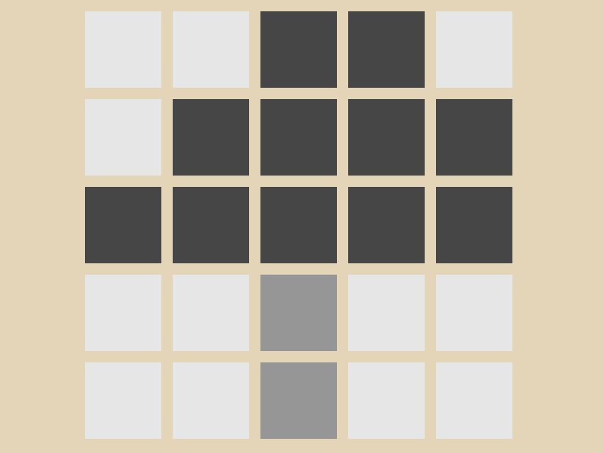
点像素
在操作图里选一个格子。第三关起，选中时轴上会亮起一个小标记，标出它的灰度位置。
一款「修图」解谜游戏：你是一间灰度修理铺的师傅，接到的委托全是被抹掉颜色的照片。你只有点像素、拖滑块、拖色块、拖阈值四种操作，要用它们把灰度照片一步步修回原来的样子。13 个关卡，从认出灰度到综合运用。
它最特别的地方，是全程没有一行教程文字：玩法规则完全藏在关卡结构里，由玩家自己试出来。
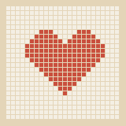
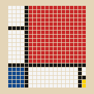
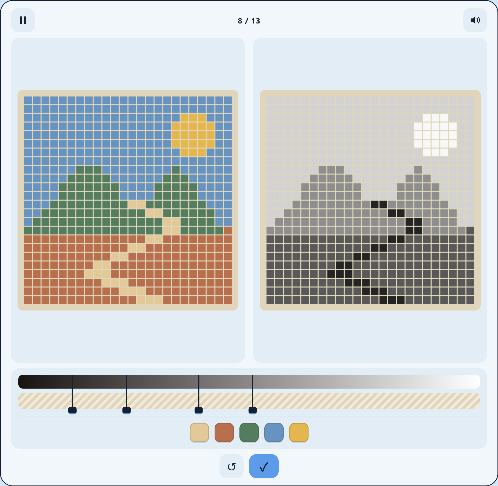
INSPIRATION
我上学期在学数字图像处理时，由于平时喜欢拍照和剪视频，摄影里的调性、修图时调的曝光和灰度，这些概念我接触得早，这门课学得也轻松。但我的舍友一直觉得这门课很难：公式能背下来，却不明白那些数字在描述图里的什么。这些知识本身并不抽象，图像放大到像素层面就是一块块小格子，灰度就是这些格子的明暗程度。
学不懂的原因，可能不在知识本身的难度，而在接触方式：这些概念一直以公式和讲义的形式出现，没有亲手操作、直接看到效果的机会。所以我把其中最基础的概念做成了一个游戏，让玩家在通关的过程中自己理解这些概念。
这个游戏做给两种人：不了解相关知识的人，和正在学这门课、概念还没建立起来的同学。
OVERVIEW
灰度修理铺（The Gray Workshop）是一个网页游戏，一共 13 关。通关条件分两个阶段：前九关的判定标准是两张图逐像素一致，通过时图框绿闪、进入下一关，未通过则红闪；第十关起，左侧换成待修复的原图，配一句英文情景（例如 “A faded old photo.”，一张褪色的旧照片），目标由玩家根据情景自己推断，判定通过后左侧才显示修好的那张。
除了通关后的简单讲解和情景句，关卡里没有针对玩法的任何教学文字或教程；每一关只出现这一关需要的操作，规则由玩家在尝试的过程中自己发现。
FOUR MOVES

在操作图里选一个格子。第三关起，选中时轴上会亮起一个小标记，标出它的灰度位置。
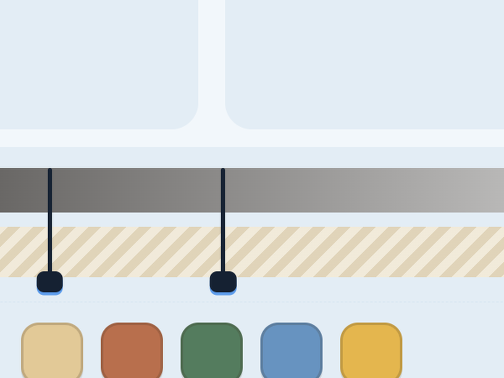
改变选中像素的灰度值。黑到白一格一格地试，拖回来、再拖过去，明暗就变了。
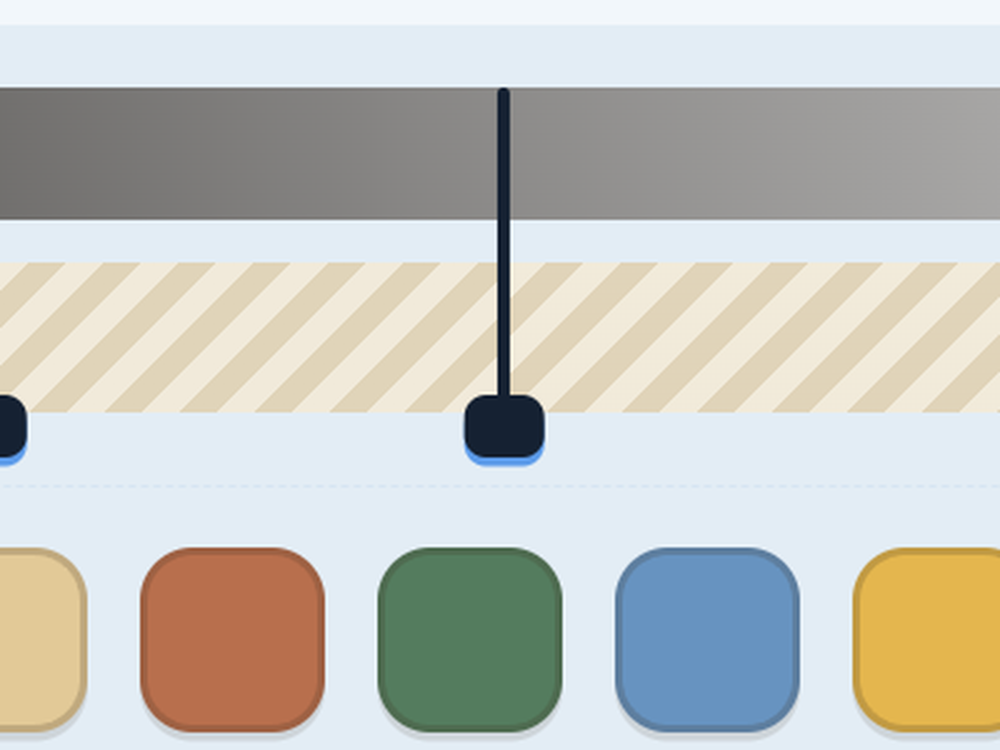
拖动轴上的分界线，决定轴在哪里分开、每段归哪边。把手能拖到轴的两端之外，把一段灰度整个并进相邻段。
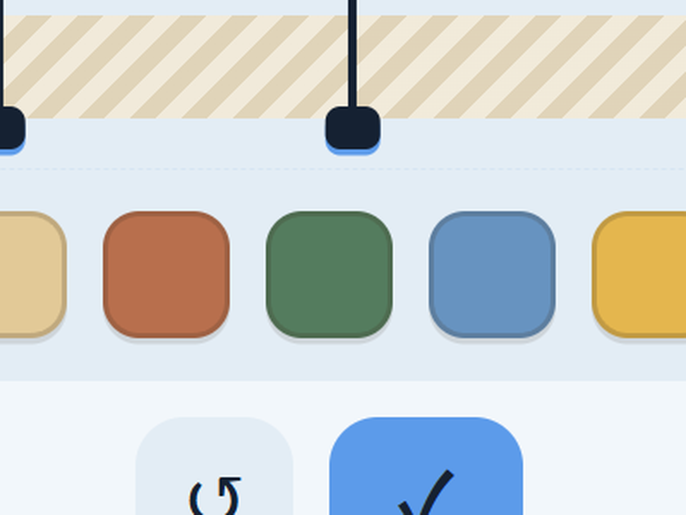
把颜色放进映射条的某一段，这段灰度里的所有像素就一起变成这个颜色。
INTERFACE GUIDE
展示本关的修复目标。调整右图，使两张图达到逐像素一致。
黑到白表示灰度值。选中像素后，轴上标记其位置；拖滑块调整该像素明暗。
与灰度轴对应。把颜色放入某一段，该灰度范围内的像素会统一显示为这个颜色。
目标图的灰度版，也是主要编辑区域。点击像素可选中，调整会实时显示在这里。
竖线和圆形手柄是阈值。拖动分界线可重新划分灰度范围，每段再对应一种颜色。
提供可选择的颜色。把色块拖入映射条，为对应的灰度段指定颜色。
LEVEL DESIGN
这个游戏有一个更早的版本。最初我按「一关对应一种算法」的想法做了一版阈值原型，配了直方图和文字对照表；给不了解相关知识的人试玩，发现它本质上是先文字教学、再照着操作，玩家没有机会主动地去理解和应用背后的原理。
由此我确立了一条标准：每一关都要经得起「完全不懂的人，能不能只靠玩就通关」的检验。第一版原型没有通过，后来推翻重做；这之后的每次改动，也都按这条标准来。
标准定下来之后，做法就反过来了：不再一关一关往下想，而是先挑一个已经想清楚的第 8 关，往回推：要撑起这一关，玩家得先会什么？缺一个概念，就补一关。
DERIVATION · LEVELS 01–13
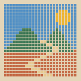
前因同学试玩第 8 关原型，看不懂界面
要做出第 8 关，
玩家得先会什么？
从认出灰度到全自主，
第 8 关需要的概念到这里补齐了
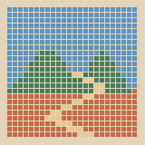
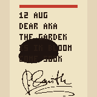
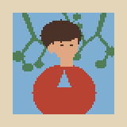
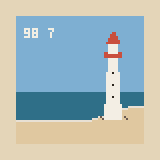
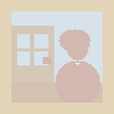
LEVEL BY LEVEL
每一关只引入一个新的操作或概念。下面按关卡组说明它教什么、为什么这样设计，以及试玩之后改掉的那些地方。
玩法
左右各一个方块，初始灰度不同，下方一个滑块。拖动滑块改变右侧方块的灰度，松手时判定，与左侧一致即通关。
设计思路
这一关是从「同学试完不明白」这里开始的。最初想直接做成的，就是后来第八关的形式：一张图、多条阈值、一组颜色全部自由配置，他看不懂这个界面。那次试玩定下了一条标准：完全不懂的人，只靠玩也要能通关。
第一关是这条标准往回推的第一步：用最简单的图让人先看到什么是灰度。整张图只有一个像素，玩家能做的只有拖动滑块，拖动时右侧方块的明暗跟着滑块的位置变化。
玩法
左右各一张 5×5 的图像，大部分像素一致，个别像素的灰度明显不对。点击一个像素，滑块跳到该像素的灰度上；逐个修正后通关。
设计思路
这一关把单个像素扩展为一张 5×5 的图像，教学点是图像由像素组成。
玩法
第三关：左侧一幅四色抽象画，右侧为其灰度版；灰度轴预先分段，把色块拖到对应段上，图像中该灰度段的像素全部映射为拖入的颜色，涂对全部灰度段即通关。
第四关：图换成蒙德里安的画，灰度调整和颜色映射同时可操作；右下角的两个黄色像素，需要同时应用灰度调整和映射颜色才能复原。
设计思路
第三关只处理「一段灰度对应一种颜色」这一个关系：阈值预先固定，玩家只需要把颜色放对。
第四关把灰度调整和颜色映射合到一起。两个黄色像素的灰度与背景相同，在灰度版里看不见，所以只能先改灰度：灰度相同的像素，颜色必然相同。
玩法
第五关：右图是嵌套的方块图案，左图是双色目标；一条阈值、两个候选色块，玩家自行放置色块并拖动阈值。
第六关：雾中的月牙，颜色预先涂好，两条阈值开局位于灰度轴两端，需要把月牙所在的灰度层从雾和背景之间分离出来，雾与背景显示为同一颜色。
第七关：雾中的爱心，机制与第六关相同，颜色不预涂，涂色与阈值均由玩家完成。
设计思路
这三关的递进只围绕阈值展开：第五关玩家第一次拖动阈值，同时颜色只有两种，操作范围最小；第六关增加到两条阈值，颜色预先涂好，以平衡新增加的操作难度；第七关阈值数量不变，把涂色也交还给玩家。
玩法
第八关：一幅五色的风景图，四条阈值、五个色块，全部自行设置，是前七关所有机制的综合。
第九关：画面与第八关相同，但左侧目标图中没有太阳。涂色和阈值仍由玩家自行设置，需要自己想办法把太阳从画面里去掉。
设计思路
第八关是综合关：用到前七关的全部机制，图更大、颜色更多；为了不让它变成纯体力活，其他方面的难度相应压低，候选色块的顺序与答案一致，只有阈值的开局位置是错的。
第九关第一次出现目标图无法直接复刻的情况。按上一关的方法涂完颜色后，太阳仍然留在画面里，唯一的解法是把天空和太阳之间的阈值拖出灰度轴最右端，让太阳所在的灰度段消失、并进天空色。
设计思路
这四关的设计目的，是把前面几关的知识点和真实应用结合起来。我寻找的是现实中图片修复的例子：修复旧照片、去除水印、人像修图。现实中的原理当然更复杂，但抽象地理解，它们的本质与游戏里的知识是同一件事：把不合适的颜色换成想要的颜色。
这一部分最初的设计仍然是前几关的做法，把目标图像直接做好。但这样一来，一个页面上需要三张图：目标图像、待修复的图像和灰度版，破坏了游戏从第一关开始一直保持的统一感。为了维持两张图的布局，目标颜色不再作为标准答案给出，而是通过情景句暗示，让玩家自己推理修复的意图：既保住了统一的设计，也让通关多出了推理这一步。
“Oh damn, the ink.”
被墨水污染的信
“Just her.”
被树枝遮挡的人像照片
“Who watermarks this?”
盖有日期戳的海边风景
“A faded old photo.”
褪色的人像旧照
NOTES
这套关卡设计始终在追求几个点：
01
灰度、阈值、映射都呈现在同一条灰度轴上，四种操作从第一关用到最后一关，界面上始终只有两张图。
02
全程没有文字教程：规则就放在关卡的初始状态里，由玩家自己试出来；概念的名字留到通关之后的讲解里。
03
难度依次增加：引入新概念时，相应降低其他方面的难度来保持平衡；后一关只建立在前一关已经学会的东西上。
思路很难一次想完整，
可以先把自己最想清楚的那部分做出来。
这个项目验证了一种做设计的方式：第八关在其余关卡存在之前就已经在我脑子里成形，向更基础的方向拆出前面的关卡，向综合的方向长出后面的关卡。做出来的内容会变成线索，在已有的东西里找规律和逻辑，再把这些逻辑应用到新的关卡上，完整的关卡结构就是这样逐渐成形的。
有时候线索以约束的形式出现，
但约束同时也是亮点。
第 10–13 关的设计就是例子：为了保持两张图的统一布局，页面上放不下目标图，这个约束促成了用情景句代替答案的方案，通关反而多出了推理这一步。设计元素的统一是我一直追求的点，但最初设计新关卡时，我并不知道该怎么保持它；随着对已有关卡的思考越来越多、理解越来越深，方法是在这个过程中逐渐明确的。
假设自己是第一次玩这个游戏，
会怎么想、哪里会不懂。
另一个贯穿始终的习惯，是站在玩家的角度思考：不能把自己的想法预设成共识，凡是我觉得理所当然的地方，都当作玩家可能不理解的地方再检查一遍，这些往往就是后续需要迭代优化的细节。
PLAY IT
嵌入显示异常时，点这里在新标签页打开 →